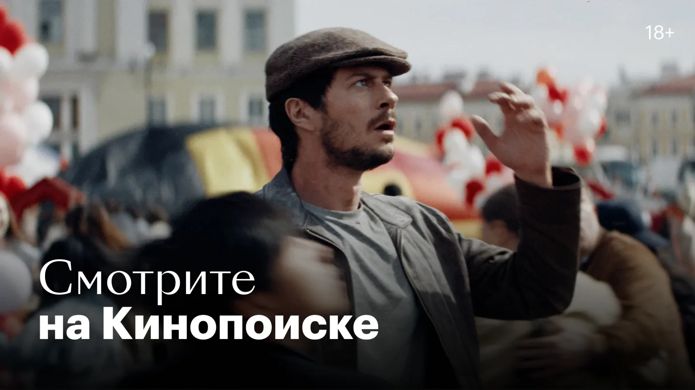
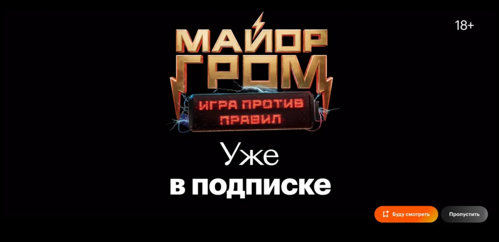
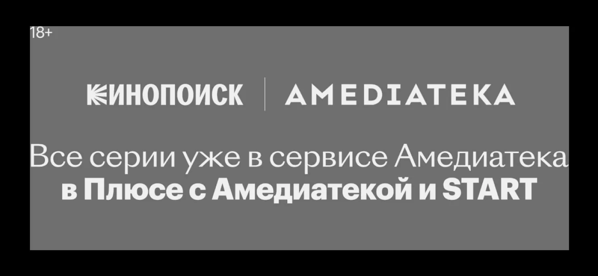
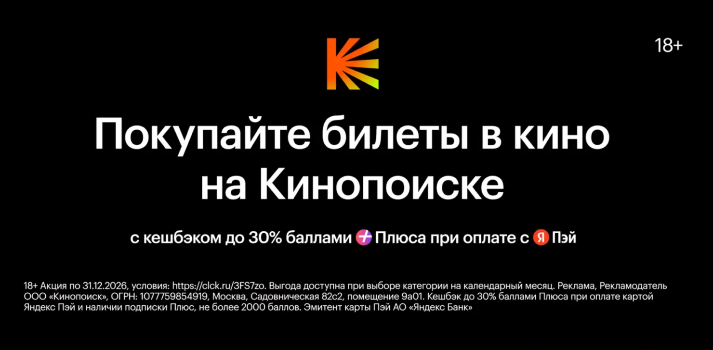
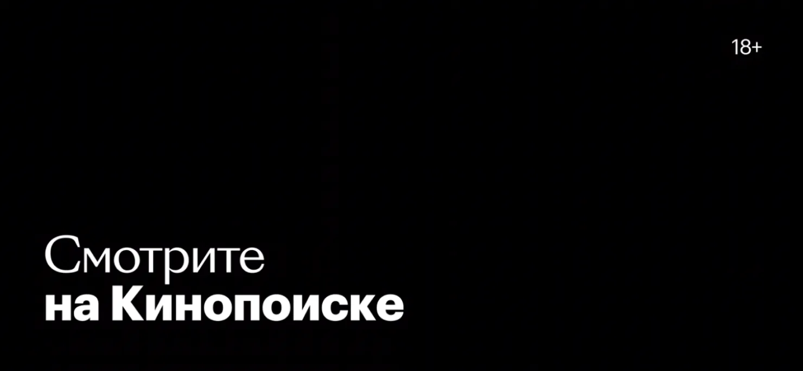
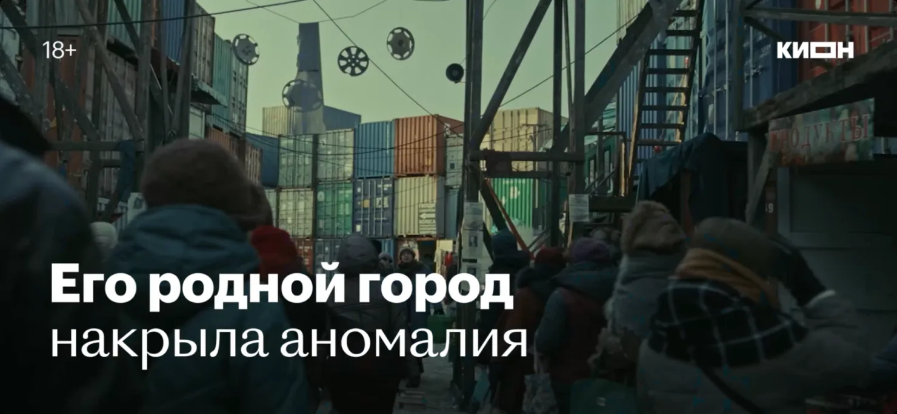

Преролл
Содержательный проморолик, который автоматически запускается при открытии плеера на Кинопоиске. Это отличный инструмент, чтобы подсветить вышедшие или будущие проекты и собрать базу зрителей, которых затем легко будет вовлечь в просмотры через CRM-инструменты.

Рост интереса
Прероллы лучше всего растят эмоциональную связь с проектом и показатель «Буду смотреть»
25 730 000
уникальных пользователей, данные охвата за 2026 года
8 819 000
Пользователей стали ждать проекты после просмотра прероллов в 2026 году
4,9%
медианная конверсия в нажатие кнопки «Буду смотреть» в 2026 году
О формате
Для чего нужен преролл
Главная задача — подсветить сильные стороны проекта. Преролл не должен агрессивно продавать или прямо уговаривать пользователя посмотреть тайтл — формат и так изначально агрессивный, поскольку самостоятельно запускается перед воспроизведением любого тайтла. Чтобы совсем не отпугнуть зрителя, преролл доносит информацию мягче: он помогает зрителю понять, почему этот фильм или сериал может быть ему интересен.
- Рассказать о будущей премьере заранее;
- Вернуть внимание к уже вышедшему проекту;
- Подсчитать пользователей, которые уже ждут релиз;
- Запустить дальнейшие продуктовые касания (коммуникации, уведомления и т.д.).
Чем преролл отличается от трейлера
Трейлер обычно раскрывает проект шире: показывает сюжет, героев, конфликты, масштаб, иногда — ключевые сцены. Ещё пользователи включают трейлеры самостоятельно, заранее настраиваясь на просмотр.
Преролл короче, точнее и включается автоматически, без желания пользователя. Его задача — не рассказать всё о проекте, а быстро зацепить зрителя перед началом просмотра другого тайтла.
Что можно продвигать
- Один тайтл, доступный на Кинопоиске;
- Фильм, который выходит в кинопрокат;
- Линейку контента — несколько тайтлов, объединённых одной концепцией (жанр, тема, франшиза, подборка).
Как зритель взаимодействует с прероллом

На преролле есть целевое действие — кнопка «Буду смотреть».
«Буду смотреть» — главный сигнал интереса. Что он даёт:
- до премьеры — формирует аудиторию ждущих премьеры, которую потом можно догнать в день релиза;
- после премьеры — запускает продуктовые механики, которые доводят пользователя до просмотра: пуш в день премьеры, автоматическое появление тайтла на витрине Кинопоиска и другие напоминания и рекомендации внутри Кинопоиска.
Как выбрать формат преролла
Формат выбирается под то, что лучше всего выделяет и описывает конкретный проект.
Сюжетный трейлер
Раскрывает сюжет, актёрский состав, обозначает жанр или уникальные особенности проекта. Подходит, когда у проекта сильная история, звёздный каст или понятный жанровый крючок.
Муд-ролик
Художественный формат, сфокусированный на атмосфере и общем настрое фильма или сериала. Подходит, когда важнее визуальный стиль и эмоция, а сюжет объяснять долго.
Цепляющий фрагмент
Законченный отрывок из серии или фильма без явных спойлеров. Подходит, когда в проекте есть самостоятельная сцена, которая работает без контекста.
Какие есть ограничения
- Хронометраж: 12–44 секунды, всегда кратно 4 секундам.
- Без диктора: весь текст идёт графикой, поэтому копирайт нужно готовить заранее.
- Оформление: только шаблоны, шрифт и сейф-зоны Кинопоиска.
- Без чувствительного контента: нельзя кровь, насилие, курение, наготу, наркотики, ЛГБТ, отношения несовершеннолетних.
- Логотипы партнёров использовать нельзя.
- Сроки: первая сборка нужна за 10 рабочих дней до релиза преролла.
Этапы согласования и сдачи
| Этап | Что сдавать | Срок сдачи | Ответ |
|---|---|---|---|
| Драфт | Первая сборка: черновая графика (копирайт), не финально сведённый звук | за 10 рабочих дней до релиза | до 2 рабочих дней |
| Финально оформленный ролик | Просмотровая версия до 100 Мб: финальная графика, сведённый звук, правки по драфту | за 5 рабочих дней до релиза | до 2 рабочих дней |
| Папка на ОТК | 2 видео + 2 аудио | за 3 рабочих дня до релиза | до 2 рабочих дней |
Как сделать преролл
Из чего состоит преролл
Преролл состоит из:
- Видеоряда;
- Титровой графики, наложенной поверх видеоряда по шаблону;
- Пэкшота с логотипом проекта и датой премьеры.
Хронометраж:
- от 12 до 44 секунд с учётом пэкшота;
- всегда кратен 4 секундам (чаще всего 36, 40 или 44 секунды);
- по фреймам всегда 0, формат тайм-кода — 00:00:36:00.
Соберите видеоряд
Требование к кадру:
эффективное соотношение сторон видимого поля не должно меняться на протяжении всего видеоряда.
❌ Запрещено включать в ролик:
- жестокие и шокирующие сцены (кровь, насилие, опасные для жизни ситуации) — всё, что запрещено ФЗ «О рекламе»;
- сцены курения;
- наготу;
- наркотики;
- ЛГБТ;
- отношения несовершеннолетних;
- другой чувствительный контент (насилие, кровь, триггеры).
Соберите графику и титры
Графика в преролле — это ёмкий текст, оформленный в титры поверх видеоряда.
Коллект графики
Правила оформления:
- строго по шаблонам из коллекта;
- только шрифт Кинопоиска;
- только в сейф-зонах Кинопоиска;
- стилистику титров переиначивать нельзя.
Структура титров:
- Открывающий титр по шаблону из коллекта.
- Основная часть — видеоряд с текстом поверх.
- Закрывающий титр на пэкшоте.
Тайминг титров:
- первый титр привязан к первому кадру видеоряда;
- отдельные титры синхронны со сменой кадров: начинаются и заканчиваются ровно вместе с новым кадром;
Напишите титровый текст
Графика в преролле — это ёмкий текст, оформленный в титры поверх видеоряда.
✅ Можно:
- обозначить жанр и формат;
- рассказать про актёрский состав и команду создателей;
- сформулировать УТП и сильные стороны проекта;
- строить нарратив рекомендательного характера.
❌ Нельзя:
- прямые call-to-action («купите билеты», «добавляйте в избранное»);
- формулировки со смыслом «самый» и другие, нарушающие ФЗ «О рекламе».
Соберите пэкшот

Пэкшот собирается по шаблону из коллекта и содержит:
- логотип проекта;
- возрастной ценз;
- титр о дате премьеры.
Длительность
минимум 3 секунды, можно дольше — до 5 секунд.
Если преролл про фильм в кинопрокате — пэкшотов два:
- Основной, собранный по шаблону.
- Единый для всех роликов — про кешбэк при покупке билетов на Кинопоиске.
Второй пэкшот тоже нужно держать минимум 3 секунды.

Проставьте возрастной ценз и логотипы

Возрастной ценз:
- проставляется по прокатному удостоверению проекта;
- если ПУ не получено — по заявке;
- если после получения ПУ ценз изменился, ролик необходимо обновить;
- ценз должен выводиться на всём хронометраже ролика.

Логотипы:
- допустимы только логотипы опций и подписок, которые можно подключить на Кинопоиске, или стриминга-производителя;
- логотипы партнёров использовать нельзя;
- размещение — только в правом верхнем углу, в сейф-зонах;
- если есть логотип опции или подписки, возрастной ценз переносится в левый верхний угол.
Сведите звук
✅ Разрешено
музыка, синхроны, эффекты.
❌ Запрещено
использование диктора.
Права
у музыкального трека должны быть очищенные права для digital-промо, синхронов и эффектов. От партнёра может потребоваться показать договор.
Адаптация
если в исходнике был дикторский текст, его можно взять за основу копирайта и оформить графикой.
Этапы согласования и сдачи
| Этап | Что сдаём | Срок сдачи | Ответ |
|---|---|---|---|
| Драфт | Первая сборка: черновая графика (копирайт), не финально сведённый звук | за 10 рабочих дней до релиза | до 2 рабочих дней |
| Финально оформленный ролик | Просмотровая версия до 100 Мб: финальная графика, сведённый звук, правки по драфту | за 5 рабочих дней до релиза | до 2 рабочих дней |
| Папка на ОТК | 2 видео + 2 аудио | за 3 рабочих дня до релиза | до 2 рабочих дней |
Состав папки для сдачи на ОТК
2 видеофайла:
- SDR (исходное цветовое пространство);
- HDR (как конвертировать SDR в HDR).
Если у ролика несколько версий пэкшота (например, «С 14 октября в кино» и «Уже в кино») — количество видео умножается на два: 2 SDR + 2 HDR, по одной паре на каждую версию пэкшота.
2 аудиофайла:
- стерео;
- технический 5.1.
Технические требования к видео
| Хронометраж | кратен 4 сек. (36 / 40 / 44 сек.), по фреймам всегда 0 — 00:00:36:00 |
| Формат | MOV. |
| Кодек | ProRes 4444 XQ. |
| Разрешение | 4K, 3840×2160. Если материал в 1080 — нужен апскейл до 3840×2160. |
| Цветовая субдискретизация | 4:4:4. |
| Развёртка | прогрессивная. |
| Уровень референсного белого в HDR | 203 nit. |
| Цветовое пространство и гамма: |
|
| Соотношение сторон | эффективное соотношение сторон видимого поля не меняется на протяжении всего видеоряда. |
| Каше | если кадр по высоте меньше, заполняем каше до нужной высоты. |
Технические требования к звуку
| Кодек | PCM |
| Частота дискретизации | 48 кГц. |
| Разрядность квантования | 24 бита |
| Интегральная громкость (EBU R128) | −23 LUFS ± 0.5 LU. |
| Диапазон громкости (LRA) | не более 18 LU. |
| Пиковый уровень (True Peak) | не выше −2 dBTP. |
| Фазировка | все каналы должны быть сфазированы между собой. Постоянное нахождение показателей коррелометров в отрицательной зоне на длительном отрезке хронометража расценивается как брак. |
Контроль даунмикса 5.1 → стерео
(чтобы не было проблем с воспроизведением на пользовательских устройствах):
- аттенюация центрального канала: −3 дБ;
- аттенюация каналов окружения: −3 дБ;
- LFE не включён в даунмикс
Чек-лист перед сдачей
- Хронометраж 12–44 сек. и кратен 4 сек., по фреймам 0
- Графика и пэкшот собраны по коллекту, шрифт и сейф-зоны соблюдены
- Первый титр привязан к первому кадру, титры синхронны со сменой кадров
- Титры не накладываются на речь героев
- Пэкшот держится минимум 3 сек. (для кинопроката — два пэкшота по 3+ сек.)
- Возрастной ценз соответствует ПУ и выводится на всём хроне
- Логотипы только опций/стриминга-производителя, в правом верхнем углу
- Нет диктора, права на музыку очищены
- В копирайте нет call-to-action и формулировок «самый»
- Нет запрещённого и чувствительного контента
- Видео: mov, ProRes 4444 XQ, 3840×2160, 4:4:4, fps как в исходнике
- Сданы SDR + HDR (×2, если версий пэкшота две)
- Аудио: Stereo + технический 5.1, −23 LUFS, ≤ −2 dBTP
- Даунмикс 5.1 → стерео проверен